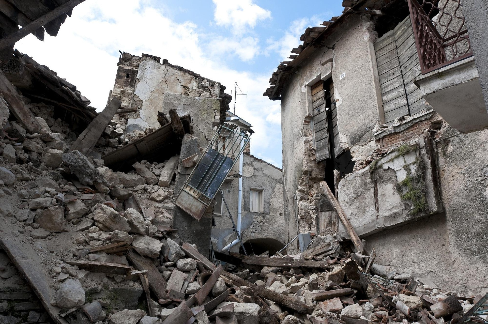
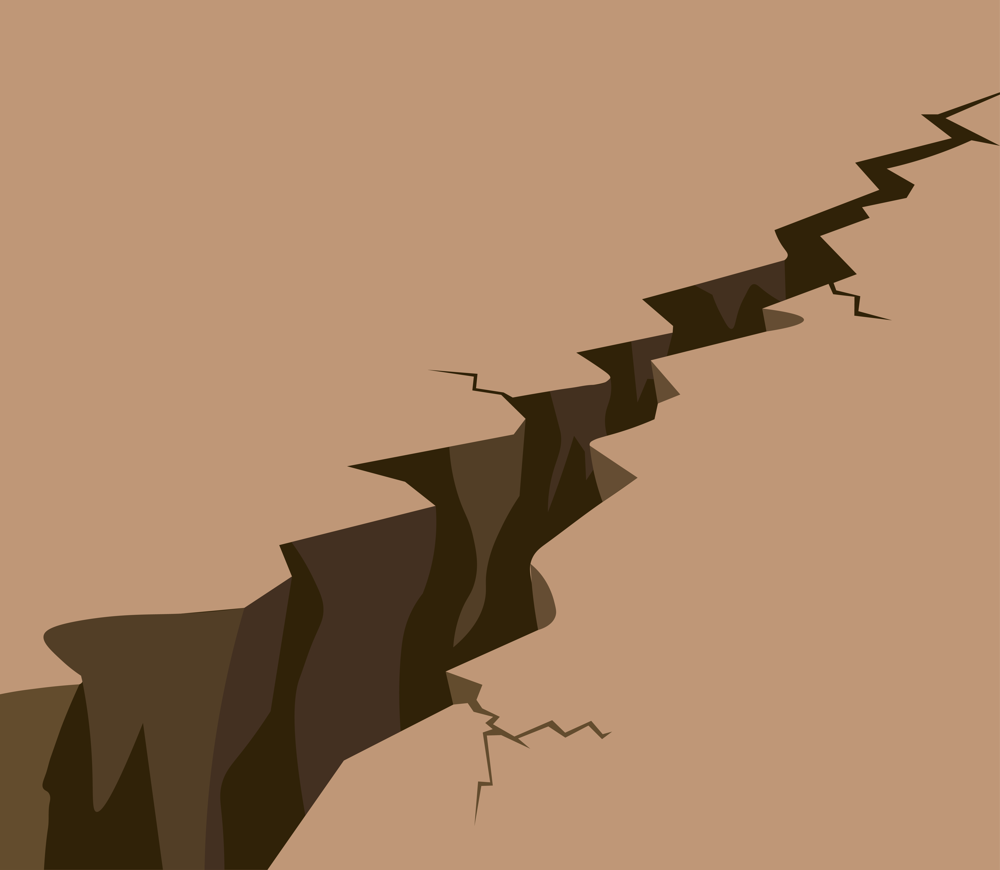

The information in the table is a record about the 9 most dangerous earthqaukes that our planet has experinced at this. Please when veiwing the infromation, I have ranked the 9 most dangerous earthquakes in desending order. I have alsor sourced the information at the bottom of the table if more information is needed.
| Year | Location | Magnitude | Epicenter Depth | Earthquake Aftermath |
|---|---|---|---|---|
| 1556 | Shaanxi, China | 8 | Unknown | One of history's worst earthquakes destroyed a 520-mile-wide region, killing up to 60% of residents in some counties and roughly 830,000 people overall.. |
| 2010 | Port-au-Prince, Haiti | 7 | 8.1 miles | While the exact death toll remains disputed due to widespread destruction, estimates suggest around 316,000 people died. |
| 115 | Antakya, Turkey | 7.5 | 6.8 miles | The earthquake devastated Antioch (near modern Antakya) and nearby areas, killing an estimated 260,000 people and triggering a tsunami that battered Lebanon's beaches. |
| 525 | Antakya, Turkey | 7 | 6.8 miles | The earthquake ruined buildings across the Byzantine Empire and killed a reported 250,000 people, while wind-driven fires caused heavy additional damage afterward. |
| 1976 | Tangshan, China | 7.5 | 7.5 - 10 miles | Because Tangshan consisted mostly of unreinforced brick buildings, up to 85% collapsed, killing an estimated 243,000 people.. |
| 1139 | Gyzndzha, Azerbaijan | Unknown | 9.9 - 14.3 miles | Little is known about the Ganja earthquake, though it claimed an estimated 230,000 lives. |
| 2004 | Sumatra, Indonesia | 9.1 | 18.6 miles | An earthquake near Sumatra sparked 15-to-30-meter tsunamis across the Indian Ocean. Lacking a warning system, the disaster killed around 227,898 people in nearby regions. |
| 856 | Damghan, Iran | 7.9 | 6.2 - 17.4 miles | Destruction spanned 220 miles, likely forcing residents to abandon the ruined ancient city of Šahr-e Qumis. |
| 1920 | Gansu, China | 8.3 | 6.8 - 10.6 miles | The earthquake damaged 7 provinces and regions, collapsing or burying nearly all buildings in some cities. Fear of aftershocks kept survivors in flimsy shelters, leading to additional cold-exposure deaths during the harsh winter. AN esitmation puts the death toll at around 200,000. |

